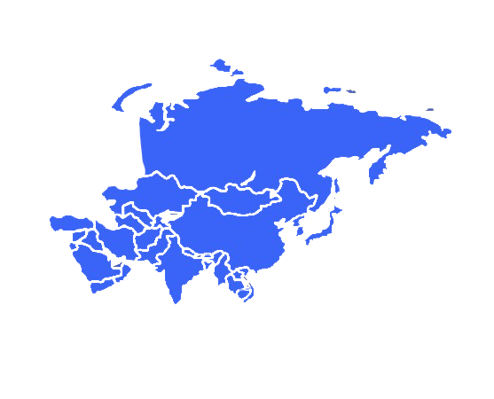

Ásia
Países
A Ásia é composta por 45 países e 7 dependências: Afeganistão, Arábia Saudita, Azerbaijão, Bangladesh, Barein, Brunei, Butão, Camboja, Cazaquistão, Catar, China, Cingapura, Coreia do Norte, Coreia do Sul, Emirados Árabes Unidos, Filipinas, Iêmen, Índia, Indonésia, Irã, Iraque, Israel, Japão, Jordânia, Kuwait, Laos, Líbano, Malásia, Maldivas, Mianmar, Mongólia, Nepal, Omã, Paquistão, Quirguistão, Rússia (parte asiática), Síria, Sri Lanka, Tailândia, Tadjiquistão, Timor Leste, Turcomenistão, Turquia (parte asiática), Uzbequistão e Vietnã.ds
Economia
O norte da Ásia é composto pela Rússia e pela Mongólia. A opção pela indústria de base em detrimento da de bens e serviços na antiga URSS, fez com que a indústria russa hoje sofra para se adaptar à economia de mercado. A Rússia tem na exportação de petróleo e gás natural sua principal fonte de receita nos dias de hoje. A Mongólia é um país com grandes dificuldades econômicas, sofrendo para se adaptar à economia de mercado, e tem no setor primário sua principal fonte de riqueza, principalmente a atividade pastoril e exploração de ouro, cobre e urânio.
Cultura
Uma das principais características da Ásia é que mesmo tendo um povo educado, receptivo, preparado e acostumado com o turismo, ele seguem suas vidas independentemente de mudanças externas. O cotidiano é igual, mesmo que existam vários turistas a passeio. E essa é uma boa forma de aproximar-se da cultura e tradições locais. A Ásia é o berço de grandes religiões do mundo, principalmente as monoteístas — cristianismo, islamismo e judaísmo.
Política
A região da Ásia é muito importante para o mundo, pois tem fortes economias e moedas, além de passar por um crescimento avançado de exportações. A Ásia desempenha um papel importante no mundo na atualidade. O continente tem aproximadamente 60% da população e 26% da economia do planeta. As economias do leste asiático, que englobam China, Hong Kong, Coreia do Sul e Taiwan, são as que apresentam as melhores taxas de crescimento. O Japão também tem uma boa projeção de crescimento, que deve atingir cerca de 1,0% em 2015.
Geografia
O continente asiático é geograficamente bastante diversificado devido à sua grande extensão. Nele, são encontrados diversos tipos de climas, relevo e uma variedade hidrográfica significativa. O relevo caracteriza-se pela presença de terras baixas como o Mar Morto e também de planaltos que apresentam elevadas cordilheiras como a Cordilheira do Himalaia. Algumas regiões encontram-se no chamado Círculo do Fogo, portanto, são muito suscetíveis a desastres naturais.
Curiosidades
- Na Ásia está o pico mais alto do planeta.
- A China, apesar de grande, mantém apenas um fuso-horário.
- A Ásia é dividida em 5 zonas: Comunidade de Estados Independentes, Extremo Oriente, Sudeste Asiático, Sul da Ásia e Oriente Médio.
- O menor país da Ásia é a Ilhas Maldivas, situada próximo a Índia e ao Sri Lanka, com apenas 298 quilômetros quadrados.